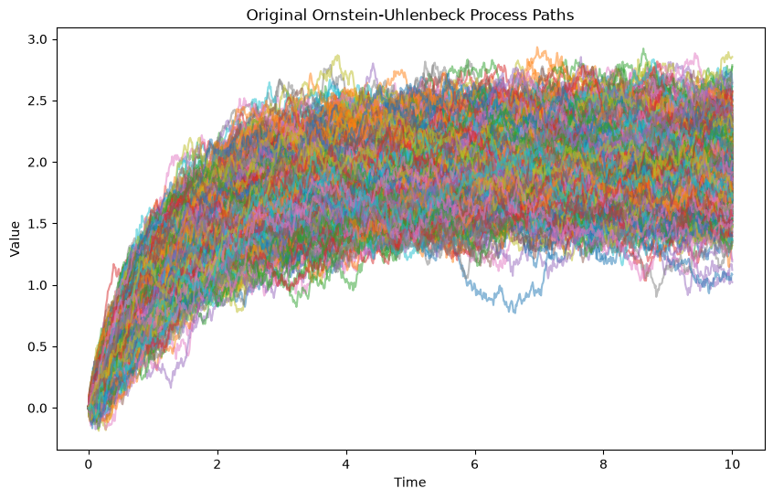
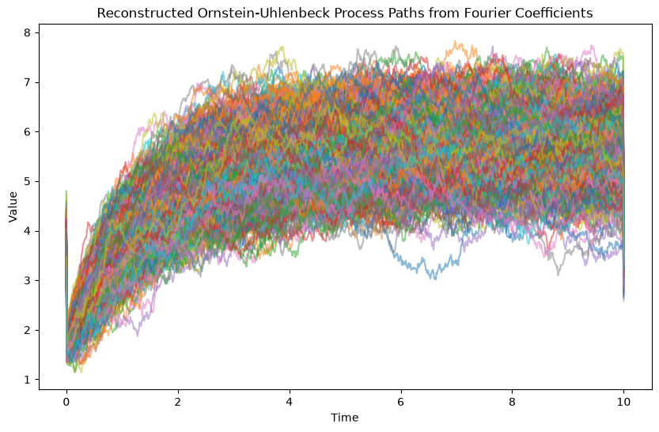
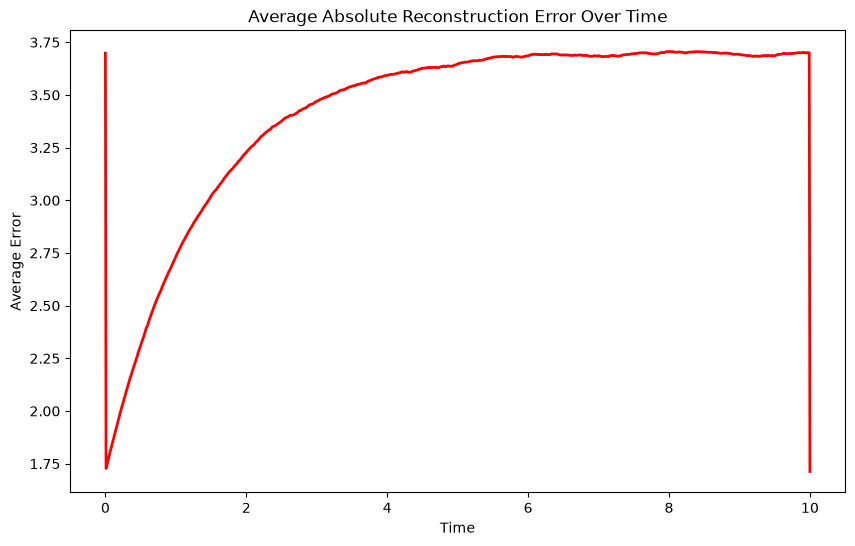
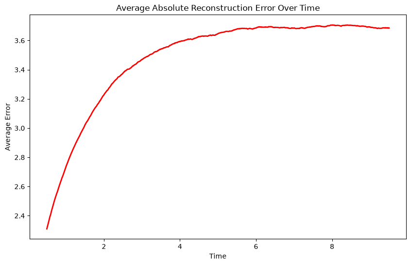
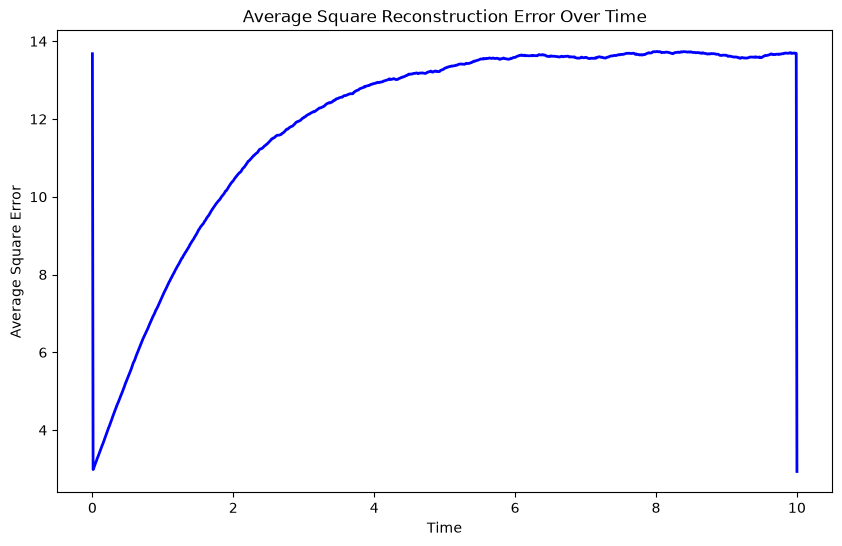
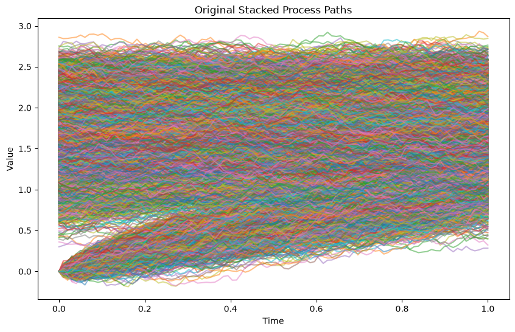
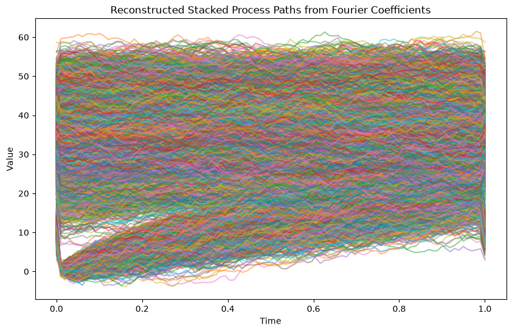
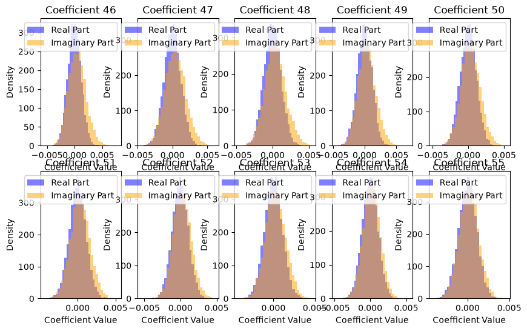
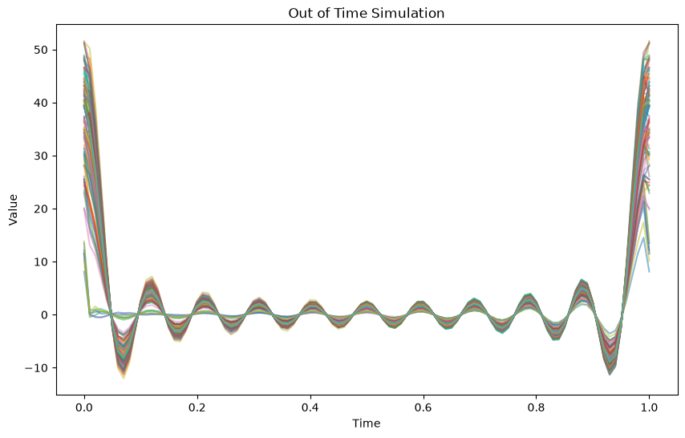

from wanderer import *
import numpy as np
import matplotlib.pyplot as pltThe Path Less Travelled
This notebook will contain all the driving code for my honours project including synthetic data generation, real data preprocessing, model training, and evaluation.
#load the OUP process from json
OUP_process = StochasticProcess.from_json('OUP_process_EM_orig.json')#Fourier decomp the OUP
coeffs = fourierDecomposition(1000, OUP_process)
# #plot distribution of each coefficient across columns
# for i in range(coeffs.shape[1]):
# plt.figure(figsize=(10, 6))
# plt.hist(coeffs[:, i], bins=30, density=True, alpha=0.5)
# plt.title(f'Distribution of Fourier Coefficient {i+1}')
# plt.xlabel('Coefficient Value')
# plt.ylabel('Density')
# plt.show()
#reconstruct the process from the Fourier coefficients
reconstructed_process = reconstructFromFourier(coeffs, OUP_process.timeGrid, OUP_process.timeHorizon)
#plot the original and reconstructed process on seperate plots
plt.figure(figsize=(10, 6))
for i in range(OUP_process.num_paths):
plt.plot(OUP_process.timeGrid, OUP_process.paths[i], alpha=0.5)
plt.title('Original Ornstein-Uhlenbeck Process Paths')
plt.xlabel('Time')
plt.ylabel('Value')
plt.figure(figsize=(10, 6))
for i in range(reconstructed_process.num_paths):
plt.plot(reconstructed_process.timeGrid, reconstructed_process.paths[i], alpha=0.5)
plt.title('Reconstructed Ornstein-Uhlenbeck Process Paths from Fourier Coefficients')
plt.xlabel('Time')
plt.ylabel('Value')
Text(0, 0.5, 'Value')

# compute the average reconstruction error at each time step
errors = np.abs(reconstructed_process.paths - OUP_process.paths)
avg_errors = np.mean(errors, axis=0)
#plot the average reconstruction error over time
plt.figure(figsize=(10, 6))
plt.plot(OUP_process.timeGrid, avg_errors, color='red', linewidth=2)
plt.title('Average Absolute Reconstruction Error Over Time')
plt.xlabel('Time')
plt.ylabel('Average Error')
#plot the average reconstruction error over time excluding the first 10 and last 10 time steps
plt.figure(figsize=(10, 6))
plt.plot(OUP_process.timeGrid[50:-50], avg_errors[50:-50], color='red', linewidth=2)
plt.title('Average Absolute Reconstruction Error Over Time')
plt.xlabel('Time')
plt.ylabel('Average Error')
#plot the average square reconstruction error over time
plt.figure(figsize=(10, 6))
plt.plot(OUP_process.timeGrid, np.square(avg_errors), color='blue', linewidth=2)
plt.title('Average Square Reconstruction Error Over Time')
plt.xlabel('Time')
plt.ylabel('Average Square Error')Text(0, 0.5, 'Average Square Error')


# # load the sp500 process from json
# sp500_process = StochasticProcess.from_json('sp500_process.json')
# #time slice the sp500 process to only include the first 15 years of data
# sp500_process_sliced = sp500_process.time_slice(0, 15)
# #predict the next 5 years of the sp500 process using the fourier decomposition method
# sp500_predicted_process = predictBeyondHorizon(sp500_process_sliced, 20, 100)
# #plot the original and predicted sp500 process on the same plot
# plt.figure(figsize=(10, 6))
# plt.plot(sp500_process.timeGrid, sp500_process.paths[0], label='Original S&P 500 Process', color='blue')
# plt.plot(sp500_predicted_process.timeGrid, sp500_predicted_process.paths[0], label='Predicted S&P 500 Process', linestyle='--', color='red')
# #add 15 year line
# plt.axvline(x=15, color='green', linestyle=':', label='15-Year Mark')
# plt.title('Original and Predicted S&P 500 Process')
# plt.xlabel('Time (Years)')
# plt.ylabel('Value')
# plt.legend()
# plt.show()#slice the OUP process to one year intervals and stack them into a new process
sliced_processes = []
for i in range(0, OUP_process.timeHorizon, 1):
sliced_processes.append(OUP_process.time_slice(i, i+1))
#stack the paths of the sliced processes into a new array
for i in range(len(sliced_processes)):
if i == 0:
stacked_paths = sliced_processes[i].paths
else:
stacked_paths = np.vstack((stacked_paths, sliced_processes[i].paths))
#find new time horizon
new_time_horizon = 1
# create a new process with the stacked paths
new_process = StochasticProcess(paths=stacked_paths, timeHorizon=new_time_horizon, timeStep=OUP_process.timeStep, method='stacked', num_paths=stacked_paths.shape[0])
#print dim of original process and new process
print(f'Original Process Shape: {OUP_process.paths.shape}')
print(f'New Process Shape: {new_process.paths.shape}')
#derive the fourier coefficients of the new process
new_coeffs = fourierDecomposition(1000, new_process)
Original Process Shape: (1000, 1001)
New Process Shape: (10000, 100)##reconstruct the new process from the Fourier coefficients
reconstructed_new_process = reconstructFromFourier(new_coeffs, new_process.timeGrid, new_process.timeHorizon)
#plot the original and reconstructed new process on seperate plots
plt.figure(figsize=(10, 6))
for i in range(new_process.num_paths):
plt.plot(new_process.timeGrid, new_process.paths[i], alpha=0.5)
plt.title('Original Stacked Process Paths')
plt.xlabel('Time')
plt.ylabel('Value')
plt.figure(figsize=(10, 6))
for i in range(reconstructed_new_process.num_paths):
plt.plot(reconstructed_new_process.timeGrid, reconstructed_new_process.paths[i], alpha=0.5)
plt.title('Reconstructed Stacked Process Paths from Fourier Coefficients')
plt.xlabel('Time')
plt.ylabel('Value')Text(0, 0.5, 'Value')

#print shape of coeffs
print(f'Fourier Coefficients Shape: {new_coeffs.shape}')Fourier Coefficients Shape: (10000, 2001)#plot the empirical distribution of the real and imaginary parts of the middle 10 Fourier coefficients of the new process
plt.figure(figsize=(10, 6))
for i in range(45, 55):
plt.subplot(2, 5, i-44)
plt.hist(new_coeffs[:, i].real, bins=30, density=True, alpha=0.5, color='blue', label='Real Part')
plt.hist(new_coeffs[:, i].imag, bins=30, density=True, alpha=0.5, color='orange', label='Imaginary Part')
plt.title(f'Coefficient {i+1}')
plt.xlabel('Coefficient Value')
plt.ylabel('Density')
plt.legend()
# undertake out of time simulation for a time period of 1 year
out_of_time_simulation = outOfTimeSimulation(distributions=new_coeffs, time_horizon= new_process.timeHorizon, time_step=new_process.timeStep, num_paths=100)#plot the sample paths of the out of time simulation
plt.figure(figsize=(10, 6))
for i in range(out_of_time_simulation.num_paths):
plt.plot(out_of_time_simulation.timeGrid, out_of_time_simulation.paths[i], alpha=0.5)
plt.title('Out of Time Simulation')
plt.xlabel('Time')
plt.ylabel('Value')
plt.show()
#plot the stacked sample paths
plt.figure(figsize=(10, 6))
for i in range(new_process.num_paths):
plt.plot(new_process.timeGrid, new_process.paths[i], alpha=0.5)
plt.title('Out of Time Simulation')
plt.xlabel('Time')
plt.ylabel('Value')
plt.show()
print("all done!")